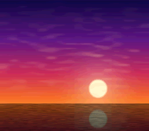

|
OpenSNES
Modern Open-Source SNES Development SDK
|
|
OpenSNES
Modern Open-Source SNES Development SDK
|

Port of krom (Peter Lemon)'s HiColor64PerTileRow demo (PeterLemon/SNES, PPU/HDMA/HiColor64PerTileRow). An H-timer IRQ fires on every scanline and general-DMAs 16 bytes (8 colors) into CGRAM while the PPU draws; over each 8-line tile row that streams a fresh 64-color set. Even tile rows render from CGRAM 0-63 while the stream refills 64-127 for the odd rows, and vice versa — 28 rows × 64 = 1792 palette slots from a mode that nominally allows 128. HDMA cannot do this: its widest mode moves 4 bytes per scanline; the technique needs 16.
The sunset art is original (procedural, res/sunset.png — 15,885 source colors); devtools/hicolor64.py reimplements krom's converter contract (64×8-pixel segments quantized to 15 colors + black). 357 distinct colors land on screen — any static 4bpp screen caps at 128.
| Register | krom | this port | note |
|---|---|---|---|
| BGMODE | %00001011 | same (setMode(BG_MODE3, 0x08)) | Mode 3, BG2 8×8 |
| BG2SC | $3C (map $3C00w, 32×32) | same (bgSetMapPtr) | map loaded at row 4 ($3C80w) |
| BG12NBA | $00 | same (bgSetGfxPtr) | tiles at $0000 |
| BG2VOFS | 31 | same (bgSetScroll, NMI-synced) | aligns rows with reset cadence |
| TM | %00000010 | same (setMainScreen(LAYER_BG2)) | BG2 only |
| DMAP0/BBAD0 | $00/$22 | same | 1 byte → CGDATA, inc source |
| HTIME | 190 | same (irqSetHTimer(190)) | writes land in H-blank |
| NMITIMEN | %10010000 | %10010001 | we keep auto-joypad (SDK default) |
| IRQ handler | HTIMERIRQ verbatim | + save/restore, $213F reset | ours interrupts arbitrary C |
| VBlank rewind | VBLANKIRQ verbatim | C callback via nmiSetBank | CGADD=0, 128 B, source reset |
To regenerate the assets from different art (requires Pillow):
console, dma, background